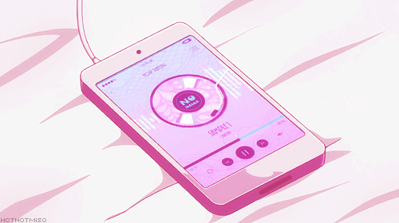
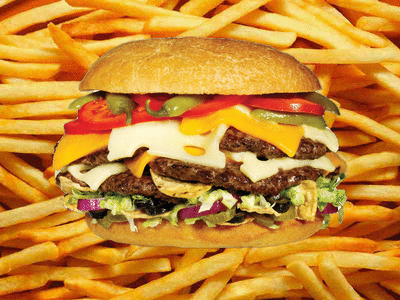

I love playing badminton when holidays or weekends with my friends because I feel enjoyment and happy even I'm tired. Badminton is one of our bonding and that's why I really like to play this sports
I really love reading a wattpad when I'm alone or when I'm freel, being readers on the wattpad it can give a lesson about family,friends also the love. It can usualy help develop our skill for reading and vocubullary also.
I like listening a music when I'm alone and being listener sometimes song is the best releiver or relax. Because of the song I can forget my problems

I love watching k-drama on the youtube when I'm bored. It can help to me improve my knowledge english skills
I love eating food